Chapter 34 Random walks
Under Construction
Content subject to revision.
34.1 Material to add
See diffusion illustration at https://en.wikipedia.org/wiki/Fick%27s_laws_of_diffusion
34.2 Objectives
- Become aware of the characteristics of the bell-shaped Gaussian hump function.
- Relate spread as measured by “standard deviation” (root mean square) and by “variance” (mean square).
- Observe diffusion from two perspectives: a unruly mob of randomly walking particles and, equivalently, the accumulation of net flux.
- Recognize that diffusion is fast over small distances and very slow over large ones.
34.3 The gaussian
From the start of CalcZ we have used a small set of basic modeling functions which will by now be familiar to you:
- exponential
- logarithm: inverse to exponentials
- power-law
- sinusoid
- hump and sigmoid
This section gives a more detailed introduction to the hump function and provides a specific algebraic formula that composes an exponentials with a low-order polynomial.
Start with the low-order polynomial: \[h(x) = - \frac{(x-\mu)^2}{2 \sigma^2}\] This is, of course a parabola with an argmax \(x^\star = \mu\) and a maximum value 0. It is written this way by convention, the point of which is to give names to two features of the function:
- The mean, \(\mu\), is the argmax of the function.
- The variance, \(\sigma^2\), how “fat” the parabola is.
(Recall that the Greek letters \(\mu\) and \(\sigma\) are pronounced “mu” and “sigma” respectively.)
A reasonable person can point out that the domain of the low-order polynomial is \(-\infty < x < \infty\). It’s sensible to define “width” to refer to that part of the domain where the function’s value is non-zero and, better, where “most” of the function is. One way to define “how much” of the function there is uses the area under the curve. The convention that you are about to see defines the width as the domain that contains the central 2/3 of the overall area.
The sandbox defines the function \(h(x)\) and graphs it, with particular emphasis on the range (vertical scale!) from -1 to 0. The graph is annotated with blue and red horizontal lines with y-intercept of 0 and \(-\frac{1}{2}\) respectively.
sigma <- 1
mu <- 0
h <- makeFun( -(x-mu)^2/(2*sigma^2) ~ x, mu=mu, sigma=sigma)
slice_plot(h(x) ~ x, domain(x=sigma*c(-1.5, 1.5))) %>%
gf_hline(yintercept = c(0,-0.5), color=c("dodgerblue", "orange3"))The width of the parabola is based on the length of the horizontal line segment between the two branches of the parabola. Specifically, the width is defined to be half the length of this line segment. In order to avoid confusion, we’ll use “width” in the usual English sense and a special term, standard deviation, to refer to half the length of the line segment. (“Standard deviation” is a good candidate for the worst name ever for a simple concept: a length. Another, equivalent term you will hear for this length is “root mean square,” which is almost as bad. Still, those are the standard terms and you should be careful to use instead of non-standard alternatives.)
Question A In the above sandbox, set sigma <- 2. What standard deviation corresponds to \(\sigma = 2\)?
1/4︎✘ 1︎✘ \(\sqrt{2}\)︎✘ 2\(\heartsuit\ \) 4︎✘
Question B Still holding \(\sigma = 2\), what is the variance of the function?
1/4︎✘ 1︎✘ \(\sqrt{2}\)︎✘ 2︎✘ 4\(\heartsuit\ \)
Question C Set \(\sigma = 3\), and read off the graph what is the standard deviation of the function?
1/3︎✘ 1︎✘ \(\sqrt{3}\)︎✘ 3\(\heartsuit\ \) 9︎✘
Question D When \(\sigma = 3\), what is the variance parameter?
1/3︎✘ 1︎✘ \(\sqrt{3}\)︎✘ 3︎✘ 9\(\heartsuit\ \)
Question E Pick a \(\sigma\) of your choice, try a few non-zero values for \(\mu\). Read off from the graph the standard deviation. How does the standard deviation depend on \(\mu\)?
- The standard deviation is \(\mu + \sigma\).︎✘
- The standard deviation is \(\sqrt{\strut\mu + \sigma^2}\).︎✘
- The standard deviation is \(\ln(\mu + e^\sigma)\).︎✘
- The standard deviation is not affected by \(\mu\).Excellent!
Question F What is the relationship between the variance \(\sigma^2\) and the standard deviation \(\sigma\)?
- The standard deviation is the square root of the variance.Nice!
- The standard deviation is 1 over the variance.︎✘
- They are completely unconnected concepts.︎✘
- The variance is the square of the mean, \(\mu\).︎✘
One of the features that make hump functions useful is that they are local, the function is practically zero except on a domain of limited width. The parabola \(h(x) \equiv - \frac{(x - \mu)^2}{2 \sigma^2}\) is non-zero everywhere except at \(x = \mu\), so not at all local.
To produce our hump function, we compose an exponential function \(e^x\) with the polynomial \(h(x)\) to get \[f(x) \equiv e^{h(x)} = \exp\left(-\frac{(x - \mu)^2}{2 \sigma^2}\right)\] This is not yet our “official” hump function, but are getting close!
The sandbox defines \(f(x)\) and graphs it. As with the previous sandbox, the graph is annotated with a blue horizontal line that touches the curve at the argmax and a red horizontal line with a y-intercept at \(e^{-1/2}\).
sigma <- 1
mu <- 0
f <- makeFun( exp( -(x-mu)^2/(2*sigma^2) ) ~ x, mu=mu, sigma=sigma)
slice_plot(f(x) ~ x, domain(x=sigma*c(-3.5, 3.5))) %>%
gf_hline(yintercept = c(0,exp(-0.5)), color=c("dodgerblue", "orange3"))
sigmoid <- antiD(g(x) ~ x, lower.bound = -Inf)
# Graph the sigmoid on the domain -10 < x < 10Notice that the vertical range of the function is \(0 < f(x) \leq 1\). The argmax is \(\mu\), so \(f(\mu) = 1\). This seems easy and convenient, but one of the purposes of the standard hump function is to define a standard sigmoid function. It’s the sigmoid that we want to have a range from 0 to 1.
How to scale the hump \(f(x)\) to produce a sigmoid with the range 0 to 1? Recall that a sigmoid is the anti-derivative of the corresponding hump. In the sandbox, we use antiD() to compute \[\int_{-\infty}^x f(u) du\], which we called sigmoid(). From the graph of sigmoid() you can read off the scaling factor that will make the vertical range of the resulting sigmoid zero to one.
Question G Where did the variable \(u\) come from in \[\int_{-\infty}^x f(u) du ?\]
- The instructors made a mistake. They will try to be more careful in the future!︎✘
- You can use any name for the variable of integration. The function \(\int_{-\infty}^x f(u) du\) will be a function of \(u\), not \(x\).︎✘
- You can use any name for the variable of integration. The function \(\int_{-\infty}^x f(u) du\) will be a function of \(x\), not \(u\).Correct.
- \(u\) is the Latin equivalent of \(\mu\).︎✘ Actually, not. \(\mu\) is equivalent to \(m\), as in the word “mean”.
Question H This question will take a bit of detective work in the sandbox. Make a table of a few combinations of different values for \(\mu\) and \(\sigma\). For each combination, find the maximum value of the corresponding sigmoid() function. Using this data, choose the correct formula for the maximum value of the sigmoid as a function of \(\mu\) and \(\sigma\).
- \(\sqrt{\strut 2 \pi \sigma^2}\)Good.
- \(\pi \sigma\)︎✘
- \(\sqrt(\strut \mu \pi \sigma)\)︎✘
- \(\sqrt(\strut \pi \sigma^2 / \mu)\)︎✘
Putting all this together, we arrive at our “official” standard hump function, called the Gaussian function:
\[g(x) \equiv \frac{1}{\sqrt{\strut2\pi\sigma^2}} e^{-(x-\mu)^2 / 2 \sigma^2}\]
34.4 Flux
Recall Newton’s Law of Cooling, \(\dot{T} = - k (T - T_a)\) Although temperature was hardly understood as a physical phenomenon in Newton’s era, with today’s sensibility you can understand that energy is flowing into or out of the object from the ambient environment. The word flux is often used in mathematics to refer to such flows.
We’ve studied cooling in a spatially discrete context, the cooling of a single point (e.g. “a cup of coffee”) in an environment that has only one property, the “ambient” temperature.
Let’s switch to a spatially continuous context, a bar of iron with one end lying in a bed of hot coals and the other end in the open air, as in the picture:

The iron rod is incandescent at the right end and cooler toward the left. If the picture were a movie, you likely would be able to predict what the action will be: Heat will flow down the rod from right to left. The free end of the rod will eventually get burning hot.
The temperature \(T\) at each point \(x\) in the rod is a function of position. But at any given position, the temperature is a function of time \(t\). That is, the temperature of the rod is a function of two variables: \(T(x,t)\).
If we were thinking about the movie frame-by-frame, we might prefer to treat \(t\) as a discrete variable and could write \(T(x,t)\) as \(T_t(x)\). It doesn’t really matter which, but it helps to think about \(T()\) as a function of \(x\) whose shape evolving in time.
Now back to Newton’s Law of Cooling. The flux of heat is the difference between the object’s temperature and the ambient temperature. But in the continuous spatial system, the difference in temperature between two infinitely close neighboring points is zero. That suggests no flux. Of course, a major theme in Calculus is to provide means to discuss the rate of difference of a value at two infinitely close points: the derivative \(\partial_x T(x, t)\). This derivative gives the flux of heat from right to left.
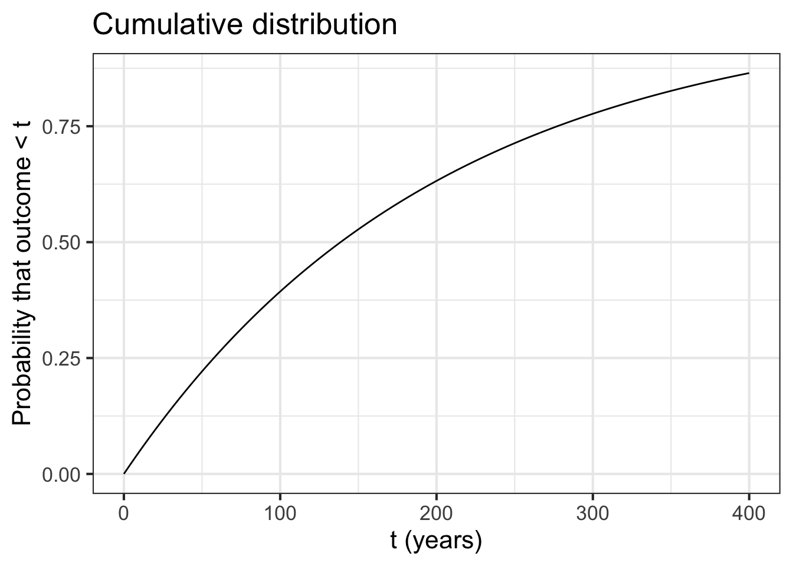
It might be tempting to translate this directly into the terms of Newton’s Law of Cooling and claim, wrongly that \(\partial_t T(x, t) = -k \partial_x T(x, t)\). Why is this wrong? In the spatially discrete setting—cup of coffee, ambient environment—there are only two spatial points of interest. But along the continuous iron rod, there are at least three points to be considered. Let’s call them \(x_A\), \(x_B\), and \(x_C\) as in the diagram. We’re interested in \(\partial_t T(x_B, t)\). This change in temperature at point B is driven by the flux from point C to point B and is proportional to \(\partial_x T(x_B, t)\). But the change in temperature at point B is equally influenced by the flux from B to A. That is, the change in temperature at point B is set by the difference in flux, the flux coming from A to B and the flux going from B to C.
In the spatially continuous context, the net flux or difference in differences (A to B, B to C) is represented by the second derivative with respect to \(x\). That is, along the rod, Newton’s Law of Cooling amounts to \[\partial_t T(x, t) = k\, \partial_{xx} T(x, t)\] This is called the heat equation and was introduced in 1807 by Jean-Baptiste Joseph Fourier (1786-1830). The same equation is now also called the diffusion equation.
Some people might be more comfortable thinking about the discrete-time dynamics of the movie, which could be written \[T_{t+h}(x) \approx T_t(x) + h\,k\, \partial_{xx} T_t(x)\]
Exercise: Turn away from the iron rod of the picture and imagine being presented with four new rods each of which has been heated in some way to produce a temperature profile at time 0, that is \(T_0(x)\) as shown in the four graphs below.
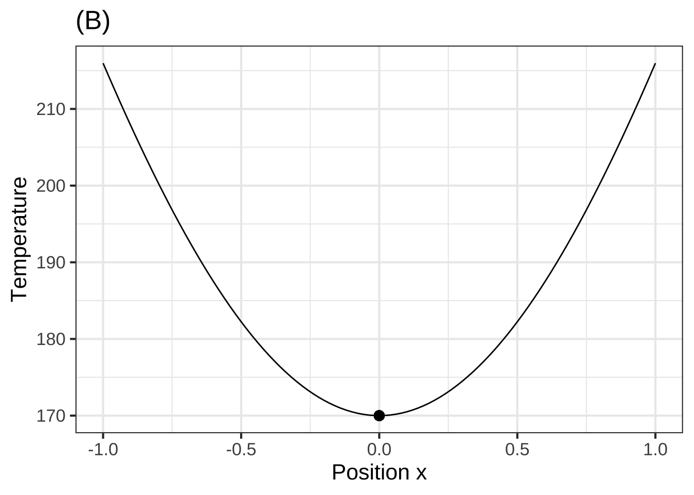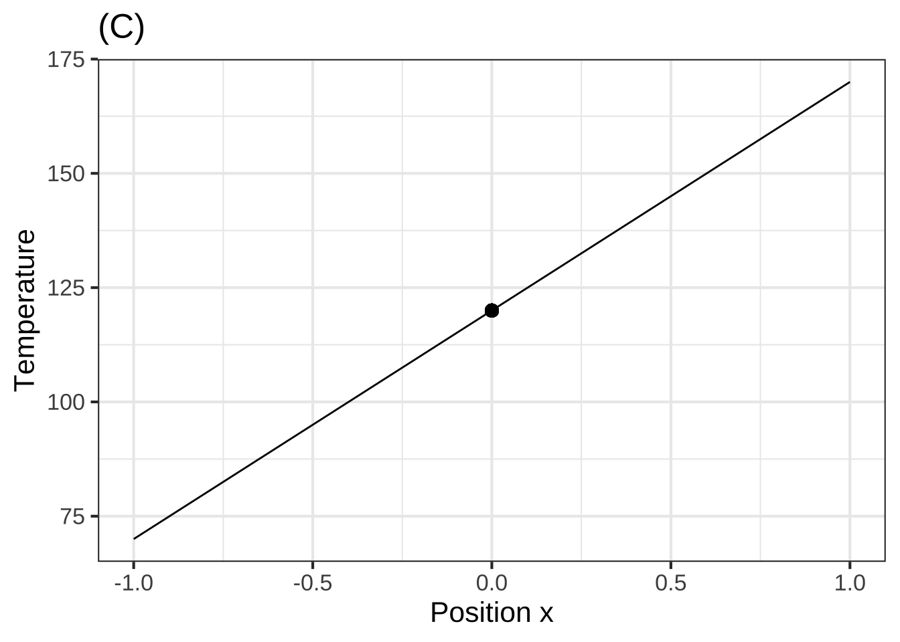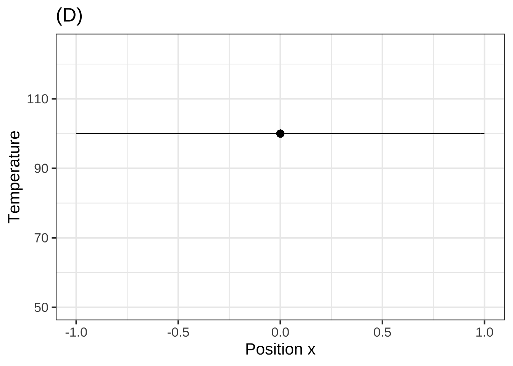
Question I For the function \(T(x, t=0)\) shown in Graph (A), how will the temperature at \(x=0\) change instantaneously? (That is, what is \(\partial_t T(x, t=0)\)?)
- Temperature decreasesExcellent!
- No change in temperature︎✘
- Temperature increases︎✘
- Temperature oscillates︎✘ The temperature can’t oscillate instantaneously. The value of a derivative function at a point is a real number, not an oscillation.
Question J For the function \(T(x, t=0)\) shown in Graph (B), how will the temperature at \(x=0\) change instantaneously? (That is, what is \(\partial_t T(x, t=0)\)?)
- Temperature decreases︎✘
- No change in temperature︎✘
- Temperature increasesGood.
- Temperature oscillates︎✘ The temperature can’t oscillate instantaneously. The value of a derivative function at a point is a real number, not an oscillation.
Question K For the function \(T(x, t=0)\) shown in Graph (C), how will the temperature at \(x=0\) change instantaneously? (That is, what is \(\partial_t T(x, t=0)\)?)
- Temperature decreases︎✘
- No change in temperatureGood.
- Temperature increases︎✘
- Temperature oscillates︎✘ The temperature can’t oscillate instantaneously. The value of a derivative function at a point is a real number, not an oscillation.
Question L For the function \(T(x, t=0)\) shown in Graph (D), how will the temperature at \(x=0\) change instantaneously? (That is, what is \(\partial_t T(x, t=0)\)?)
- Temperature decreases︎✘
- No change in temperatureGood.
- Temperature increases︎✘
- Temperature oscillates︎✘ The temperature can’t oscillate instantaneously. The value of a derivative function at a point is a real number, not an oscillation.
34.5 Diffusion
Recall that the heat equation describes how the temperature along a approximately 1-dimensional object—an iron bar, for example—changes with time due to spatial differences in temperature from point to point. The heat equation is
\[\underbrace{\partial_t T(x, t)}_\text{change in time} = \ \ \ k\, \underbrace{\partial_{xx} T(x, t)}_\text{pattern in space}\]
Question M Suppose the inputs to the temperature function have units centimeters (for \(x\)) and seconds (for \(t\)) and that the output is in degrees Kelvin (which we’ll write “K”). What are the units of the coefficient \(k\)?
\(K cm^{1}\)︎✘ \(K cm^{2} s^{-1}\)︎✘ \(cm^{2} s^{-1}\)\(\heartsuit\ \) \(s cm^{2}\)︎✘
At the time Fourier was working, there was no molecular theory of matter and very little understanding of what the “heat substance” might consist of. Now we know that heat is the energy of molecular vibrations. This energy diffuses through the material.
Similarly, “diffusion” is one mode of physical motion of material, for example movement of sugar molecules within a cell. Other things can diffuse as well, for example the action of viscosity in fluids can be seen as the diffusion of momentum.
Starting in the 20th century and in support of the developing molecular theory of gasses, mathematicians and physicists undertook to follow the trajectories of individual diffusing particles and to develop a means to describe them mathematically. This included the concept of a “random walk,” movement of a particle shifting direction and speed randomly as it collides with other moving molecules and particles in its environment.
The movie shows a simulation of a few particle (in yellow) undergoing a random walk. The path followed by each diffusing particle is shown in blue; the velocity of one particle is indicated with a red vector.

The idea of random walks has become especially important in economics and finance. The walking “particle” might be the price of a stock or other derivative asset. The “collisions” happen as individual trades are made in the market, each trade being influenced by some news or situation or the passing whims, fancies, or fears of investors. The work on this point of view started about 1900 by a mathematics graduate student, Louis Bachelier, who undertook to study the movements of the Bourse, the Parisian stock exchange. The 1997 Nobel Prize in economics was awarded for a “new method to determine the value of [market] derivatives.”
For these reasons, we’re going to focus and the mathematics of diffusion instead of the equivalent but historically prior mathematics of heat. We’ll work with a function \(C(x, t)\) which stands for the concentration of particles in some medium such as a gas as a function of space and time. In economics, \(x\) will stand for the value of some asset such as an investment, and \(C()\) gives a probability density for each possible value of \(x\).
For the sake of visualization, suppose some odor molecules are released in at the midpoint of a pipe with absolutely still air. Over time, the molecules will diffuse throughout the along the extent of the pipe.
If \(C(x, t)\) is the concentration of odor molecules at each point \(x\) and time \(t\), then the change in concentration with time is:
\[\partial_t C(x, t) = D\, \partial_{xx} C(x, t)\] This is called the “Diffusion equation.” \(D\) is called the “diffusion coefficient” and depends on the size of the molecule and the temperature in the pipe. The “diffusion equation” is exactly the same as the “heat equation,” with different names used for the quantities involved.
Question N Suppose the inputs to the concentration function have units centimeters (for \(x\)) and seconds (for \(t\)) and that the output is in nanograms per cubic centimeter (\(ng\ cm^{-3}\)) . What are the units of the coefficient \(k\)?
- \(ng cm^{-1}\)︎✘
- \(ng cm^{1} s^{-1}\)︎✘
- \(cm^{2} s^{-1}\)Right! \(D\) in the diffusion equation has the same units as \(k\) in the heat equation!
- \(s cm^{1}\)︎✘
Many people have difficulty imagining the sorts of frequent collisions that are behind diffusion. They think, for instance, that in still air the molecules are pretty much still. This is wrong. A typical velocity of a water molecule in air at room temperature and pressure is 650 m/sec. (The speed of sound is about 350 m/sec.) But the time between molecular collisions is on the order of \(10^{-10}s\), so the typical distance travelled between collisions is about \(10^{-7}m\). For a root mean square distance of 1m, we need roughly \(10^{14}\) collisions, which would occur in \(10^{4}\) seconds (a couple of hours).
34.6 Variance dynamics
In this section, we’ll explore the connection between diffusion and the gaussian function. Recall that we modeled the temperature along a one-dimensional spatial domain (a “bar of iron”) as it evolves in time as a function of both position and time: \(C(x, t)\). The same sort of function—of position and time—can be used to describe the concentation of particles freely diffusing along a medium such as air in a pipe.
We constructed a differential equation to describe the dynamics of \(C(x, t)\) called the “heat” equation or the “diffusion” equation, depending on context. Before using that differential equation, let’s explore a little bit what we might mean about the “dynamics of a function.”
In studing dynamics we worked first with time taken discretely, e.g. a sequence of states \({\mathbf x}_0\), \({\mathbf x}_1\), \({\mathbf x}_2\), \(\ldots\), \({\mathbf x}_n\), \(\ldots\). The vector \({\mathbf x}_n\) is the “state” of the system at time step \(n\). In our work, we looked at 1-dimensional and 2-dimensional states, tracing out a trajectory from one time step to the next and the next and so on. Exactly the same ideas would apply to 3- and higher-dimensional states, say an ecosystem involving growing grass, and populations of mice, rabbits, foxes, birds, and so on.
In our present contexts, heat or diffusion, we are working with functions. Let’s return to the earlier metaphor of a movie of \(C(x, t)\) with the frames taken every \(h\) seconds. The movie is the sequence of frames \(C_0(x)\), \(C_h(x)\), \(C_{2h}(x)\), \(\ldots\), \(C_t(x)\), \(\ldots\).
To describe the dynamics—that is, the change from frame to frame in the movie—we write a finite-difference equation, generically: \[C_{n+1}(x) = f(C_n(x))\] In the movie of diffusion, that equation will be this:
\[C_{t+h}(x) = C_n(x) + h\, \alpha\, \partial_{xx} C_n(x)\] The term \(\partial_{xx} C(x)\) tells us the net flux of heat/particles/probability into the point \(x\).
In English, this says, “The concentration at \(x\) in one frame of the movie is the amount that was there in the previous frame plus the net flux of heat/particles from the neighboring points.”
Now imagine making the movie using an ultra-high-speed camera that takes a new frame every \(h\) microseconds. We’ll label the time of one frame as \(t\) and the time of the next frame as \(t+h\). The frame-to-frame change is therefore \[C_{t+h}(x) = C_t(x) + h\, \alpha \partial_{xx} C_t(x)\] We can equally well write \(C_t(x)\) as \(C(x, t)\), our notation for functions on a continuous domain. Doing this, and re-arranging the formula, gives: \[\frac{C(x,t+h) - C(x,t)}{h} = \alpha \partial_{xx} C(x, t)\] The left side of this equation is the differencing operator applied to \(C(x, t)\) (with respect to \(t\)). In the limit as \(h\rightarrow 0\) (that is, as you turn the video frame rate faster and faster) we can replace the left side of the equation with the partial derivative \(\partial_t C(x,t)\). That’s the heat/diffusion equation.
We’re going to find the solution \(C(x,t)\) to the differential equation using Euler’s method. In other words, we’ll make movies of the functions \(C_t(x)\) one frame at a time. We know the dynamics; to start we need is an initial condition, the function \(C_0(x)\).
Imagine that we have a long, thin pipe filled with still air and we inject at position \(x=0\) a concentration of particles, say 1600 per cm^3. Equivalent, you could picture a freezing-cold iron bar and, at time \(t=0\), we place a white-hot coal on the center point, heating it to 1600 (deg C) and then removing the coal. The initial condition looks like this:
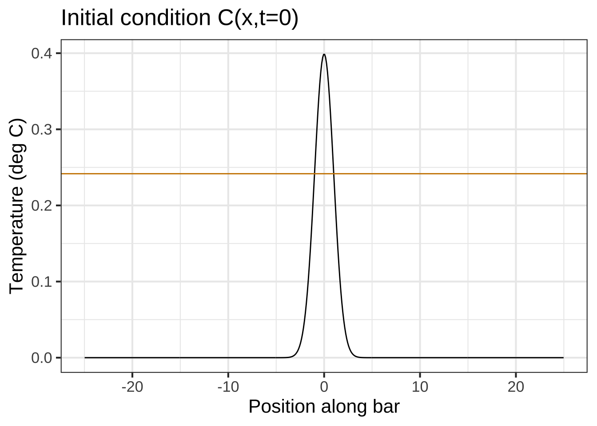
The red horizontal line is positioned to enable you to read off the standard deviation of the bell-shaped function.
The next frame of the movie will show \(C_h(x)\). To construct that, we’ll compute the net flux into each point on the bar.
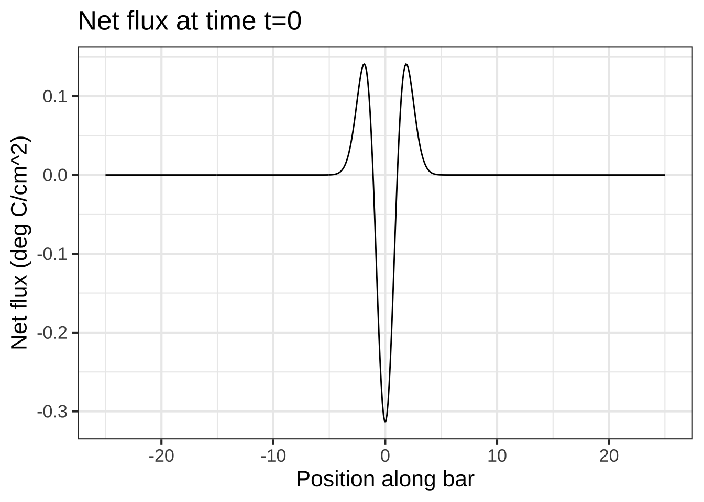
You can see that there is a strong net flux out of the center point and a net flux in to neighboring regions: the heat will be spreading out. Far from the center point, the net flux is zero. In the next graphs, we’ll zoom in on the center of the domain, \(-2.5 \leq x \leq 2.5\).
To find the next Euler step, that is, the function \(C_h(x)\), we add the net flux (scaled by \(h \alpha\)) to \(C_0(x)\). As usual, we take one Euler step after the other to reach whatever time \(t\) we want.
Here is the solution \(C(x, t=0.5)\) shown with \(C(x, t=0)\) superimposed in blue. (We set \(\alpha=2\) and used 5 Euler steps with \(h=0.1\).)
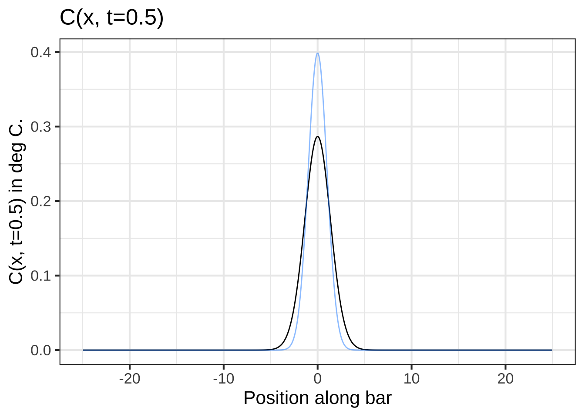
At time \(t=0.5\) , the temperature at the center has gone down. Less obviously, \(C(x, h)\) is a tiny bit wider than \(C(x,t=0)\). That is, heat has spread out a bit from the center.
Here is the function \(C(x,t)\) at \(t=1, 2, 3, 4\). You can see the function spreading out as \(t\) increases. We’ve zoomed in on the x-axis to where the action is.
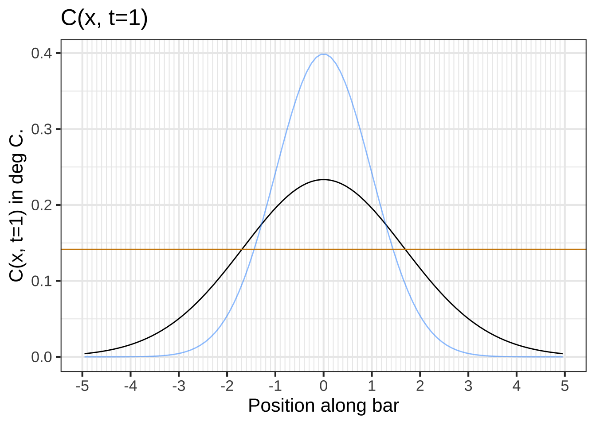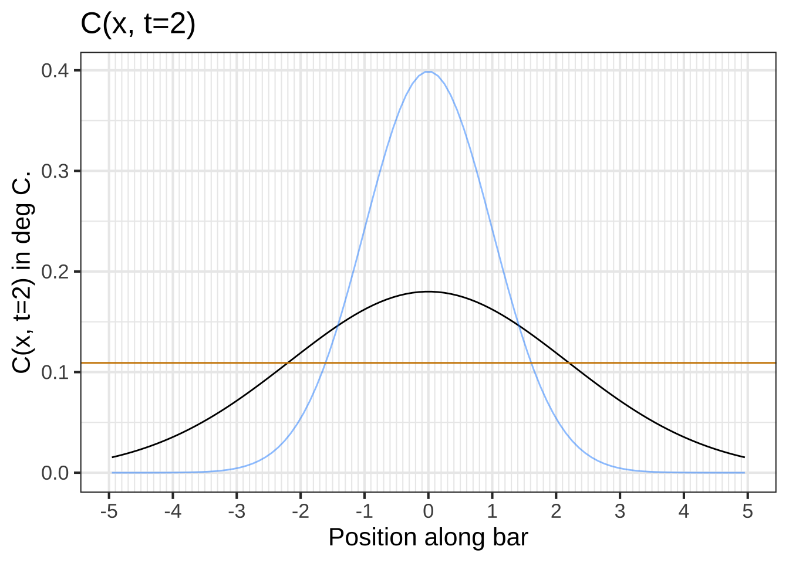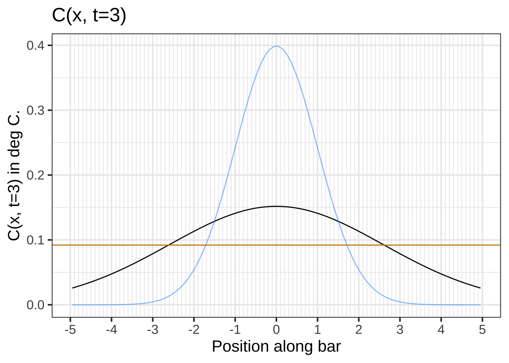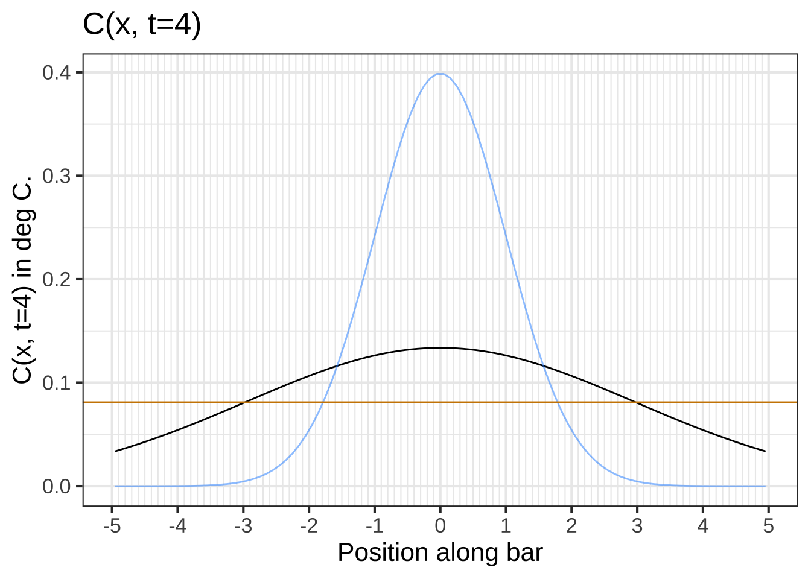
Question O Use the intersection between the red horizontal line and the black curve to find the width of the black curve, that is, the standard deviation. Which of these sequences correspond to the standard deviation at times 1, 2, 3, and 4?
- \(\sigma_1 = 1.7, \sigma_2 = 2.1, \sigma_3 = 2.5, \sigma_4 = 2.9\)︎✘
- \(\sigma_1 = 1.7, \sigma_2 = 2.2, \sigma_3 = 2.6, \sigma_4 = 2.9\)Nice!
- \(\sigma_1 = 1.7, \sigma_2 = 2.2, \sigma_3 = 2.7, \sigma_4 = 3.2\)︎✘
- \(\sigma_1 = 1.7, \sigma_2 = 2.2, \sigma_3 = 2.8, \sigma_4 = 3.5\)︎✘
Here is a similar set of graphs for \(t=10, 20, 30, 40\):
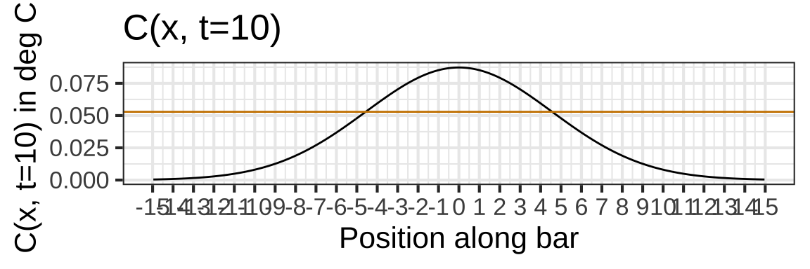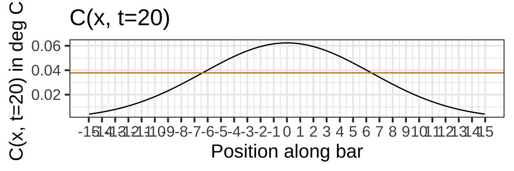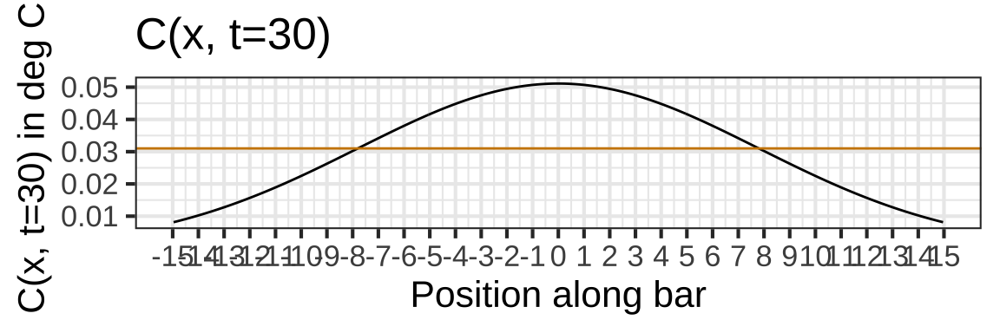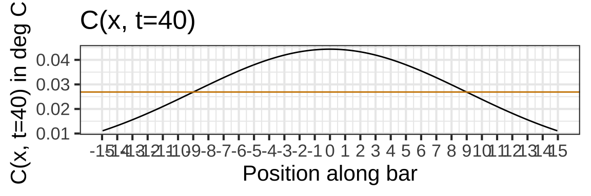
Question P Which of these sequences correspond to the standard deviation at times 10, 20, 30, and 40?
- \(\sigma_{10} = 4.5, \sigma_{20} = 6.4, \sigma_{30} = 7.7, \sigma_{40} = 9.0\)Nice!
- \(\sigma_{10}= 4.5, \sigma_{20} = 6.0, \sigma_{30} = 7.5, \sigma_{40} = 9.0\)︎✘
- \(\sigma_{10} = 4.5, \sigma_{20} = 5.8, \sigma_{30} = 7.1, \sigma_{40} = 8.4\)︎✘
- \(\sigma_{10} = 4.9, \sigma_{20} = 6.0, \sigma_{30} = 7.9, \sigma_{40} = 9.3\)︎✘
Question Q The standard deviation increases with time. Which one of these power-law relationships best corresponds to the standard deviations you measured off the graphs?
\(\sigma_t = k t\)︎✘ \(\sigma_t = k t^2\)︎✘ \(\sigma_t = k \sqrt{t}\)\(\heartsuit\ \) \(\sigma_t = k t^{1.5}\)︎✘
Essay question: A more fundamental way to measure the increase in width of \(C(x, t)\) with time is to use the variance rather than the standard deviation. Describe briefly the very simple pattern that the variance of \(C(x, t)\) follows over time. (You don’t have to give a formula, just say what function it is.)
34.7 Random walk
The solution to diffusion differential equation gives the concentration of the diffusing particles \(C(x, t)\) at any \(x\) and \(t\). At any given value of \(t= t_1\), the shape of \(C(x,t=t_1)\) tends to a smooth bell-shaped curve: the gaussian function. The width of the gaussian is a function of \(t\). Conventionally, the width corresponds to the variance parameter \(\sigma^2\). This changes with \(t\) in a very simple way: \[\sigma(t)^2 = D t\]
Everything is smooth and nicely behaved. But this is an abstraction which summarizes the concentation of a theoretically infinite population of particles. Looking at the position of a single particle as a function of time gives a very different impression. The figure shows individually the trajectories of 50 (randomly selected) particles.
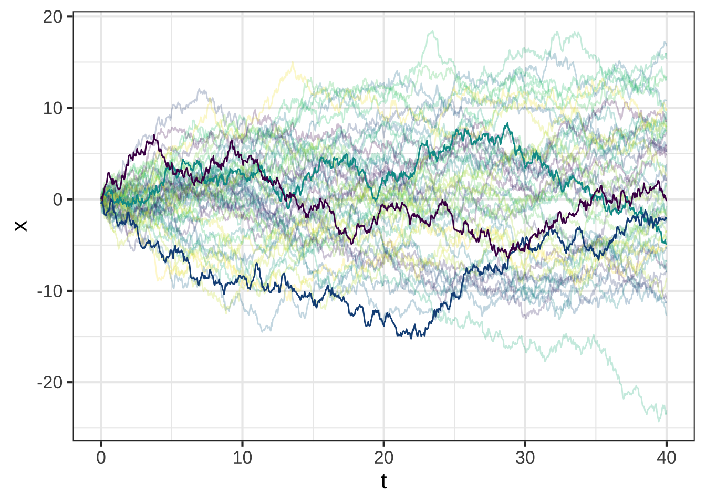
Do take note that the position of each particle in the pipe at time \(t\) is shown on the vertical axis.
Each of the trajectories is called a random walk, as if a walker were randomly taking steps forward or backward.
34.8 Mean square
We’ve imagined a situation where there is a pipe filled with air and we have introduced, at time \(t=0\), a bunch of small particles at the mid-point of the pipe. As time goes by, the particles diffuse throughout the pipe. Eventually, the particles will fill the pipe uniformly, but in the early stages of the process the distribution will be uneven.
We can look at the concentration or density of the particles in two different ways. Most intuitively, we can draw a map of where the particles are, putting a dot for each particle. More abstractly, we can count the number of particles in the small interval \(x\) to \(x+h\), and calculate the concentration or density of particles at position \(x\) as the counted number divided by \(h\), the length of the interval.
The graphics show both of those kinds of displays of density as a function of \(x\). The first is soon after the particles have been released, the others come at the indicated times thereafter. In each graph, we’ve drawn one particle, selected at random, in red just so that we have a particular particle to refer to. We’ve also added the red reference line that enables you to calculate the width (that is, “standard deviation”) of the density function.
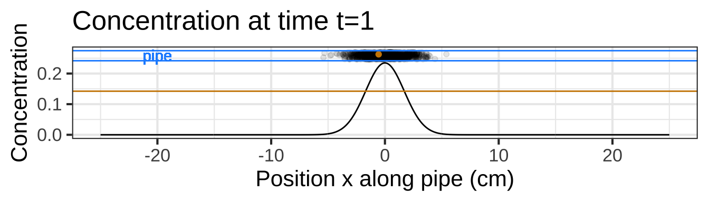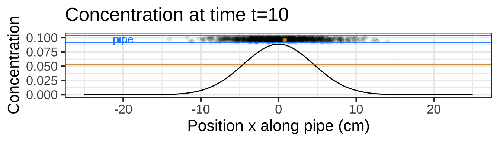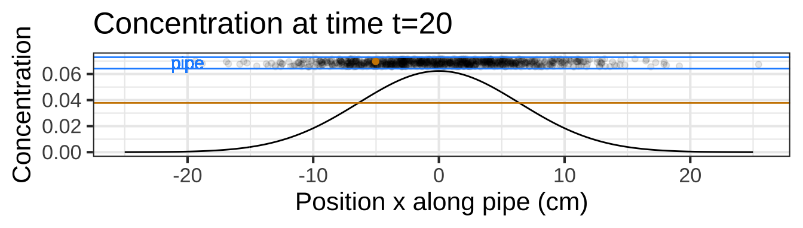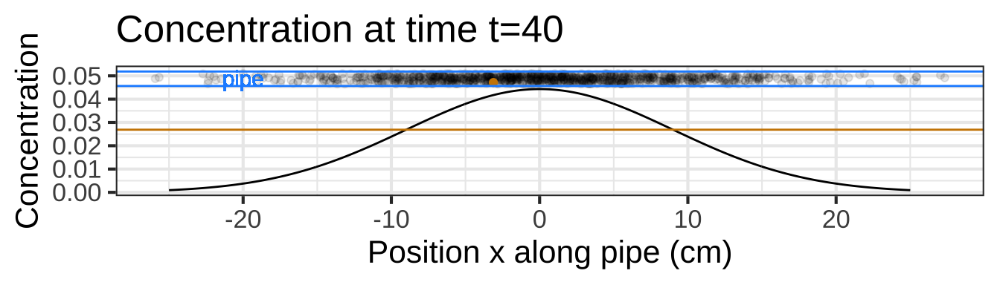
Question 1: How far have the particles spread at time \(t\)?
To give a sensible answer, you have to define what “spread” means. We use the standard definition and measure spread as the standard deviation \(\sigma\) of the density function. For each time, you can read this off the graph using the red-line annotation. Amazingly, there is a simple formula for \(\sigma\) as a function of time:
\[\sigma(t)^2 = D\, t\] Where \(D\) is a constant that depends on the size of the particles and the temperature, but not on \(t\). \(D\) is called the diffusion coefficient.
Question 2: How far does an individual particle travel from the release point as a function of time?
I don’t want to seem glib, but the answer is, “It depends on which particle you choose.” For the red particle, you can read its distance at time \(t\) from the graph. But if we had selected some other particle, the answer would be different.
There is no specific formula for the distance that an individual particle travels from the release point in time \(t\).
This would be true even if there were only one particle to follow. It might sound strange to talk about the diffusion of a single particle, but each and every particle moves independently of the others.
The question of “how far” needs to be answered statistically. And the standard answer to to average over all particles the square distance of each particle from the release point. This sort of average is called a mean square, that is, the mean of the square distance. And there is a formula for the mean square as a function of time. It is \[\text{mean square distance} = D\, t\] Suppose we measure distance from the release point in centimeters. Then the mean square distance will have units of square-centimeters. That’s going to be confusing. For this reason, most people prefer to work with the square root of the mean square distance, that is, the root mean square distance. For diffusive motion, there’s a formula for that as well:
\[\text{root mean square distance} = \sqrt{\strut D\, t}\] This will have units of \(\sqrt{\strut\text{cm}^2}\), that is, cm.
Since we know the distance as a function of time, we can calculate the velocity as root mean square distance divided by time, that is:
\[\text{`velocity'} = \sqrt{\frac{\strut D}{t}}\] We’ve got a particle diffusing in a pipe. The velocity is getting smaller with time.
Imagine some time goes by so that the velocity has decreased by 99%. Along comes another person who observes the same particle and sets out to measure how the velocity changes in time. That person will claim that the velocity is 100 times greater than the velocity you observed at the end. Same particle. Nothing is changing in the dynamics. How can the new observer see a new velocity? A paradox.
When working with diffusive motion, it’s best to answer “how far” in terms of mean square distance.
Example: Finance If you follow the stock market, you know that it goes up and down on a daily basis. Actually, it goes up and down on a second-by-second basis and all those small increments add up to the daily change. Journals regularly report such changes, for instance, “Today the Standard and Poors 500 stock index was down by 1.1%.” Often such news comes with the journalist’s explanation, e.g. “prices were down in anticipation of tomorrow’s monthly release of the unemployment rate,” or “stocks were broadly down as investers took profits from Friday’s gains.”
In fact, sophisticated investors treat stock prices as a diffusive motion. The root mean square change in stock indices is roughly 1% per day. Movements up and down by that amount or even twice that amount should be reported as, “Nothing happened on Wall Street today.”
That 1% typical daily motion, if nothing were going on, would accumulate to about a 15% yearly motion, up or down. A 15% annual return (or loss!) is nothing to be surprised about. (Twice that shouldn’t be a shock either.) If someone tries to sell you a mutual fund with a claim, “We went up 20% last year,” your thought should not be “It will be worth double in less than five years.” Instead you should ask the salesman what the average yearly return over the last five years has been. That number will typically be much lower, more or less \[\frac{20\%}{\sqrt{5}}\]. If so, the return last year gives no reason to think the mutual fund is a winner.
That root mean square daily proportional change in price of an asset is called the volatility of the asset. Knowing the volatility helps you to understand the risk associated with the asset. That risk will be different depending on how long you plan to own the asset. A typical stock market index has a volatility of something like 15% per year. That level of risk in unacceptable to many people. But if you plan to hold on to the asset for 10 years, the volatility becomes only \[\frac{15\%}{\sqrt{10}}\] per year or about 5%.
Question R A stock shows a volatility of 1% per day. What is the volatility over a year? (Assume 250 trading days per year.)
1%︎✘ 15%\(\heartsuit\ \) 50%︎✘ 250%︎✘ Question S Your uncle has just bought a stock that went up 30% in the last month. He describes his investment strategy, “I look for companies where there is a lot of churn in stock prices. Then I buy low and sell high.”
You doubt your uncle’s investment savvy. Make a rough estimate of the daily volatility of the stock if the 30% gain were just a random result of daily ups and downs. (Assume 25 trading days per month.)
1%︎✘ 5%\(\heartsuit\ \) 15%︎✘ 25%︎✘
Question T The diffusion coefficient for sodium ions in water is about \(2 \times 10^{-5} cm^2/s\) whereas for a molecule like glucose the coefficient is about \(6 \times 10^{-6} cm^2/s\). If diffusion were the sole mechanism of spread, how long would it take a sugar molecule to travel 1cm, about half the distance from a sugar cube to the side of a teacup?
About 20 seconds︎✘ About 200 seconds︎✘ About 2000 seconds︎✘ About 200,000 seconds\(\heartsuit\ \)
This web site says it lists some everyday examples of diffusion. The examples are mostly wrong. For example: “You can smell perfume because it diffuses into the air and makes its way to your nose.” “Cigarette smoke diffuses into the air.” “Leave a soda bottle open and the carbon dioxide bubble will diffuse and leave it flat.” Let’s explore why this is wrong. First of all, you can see carbon dioxide bubbles rise more or less in a straight line at about 10cm/s, the motion being driven by the balance between viscosity and bouyancy. That’s not diffusion in any way. For diffusion, if it took 1/10 of a second to go 1cm, it would take 10 seconds to go 10cm.
Exercise: Particles that are the produce of combustion have a range of sizes, from 0.01 to 10 \(\mu m\). The diffusion coefficient of a \(10 \mu m\) particle is estimated at around \(1 {\mu m}^2 /s\).
Question U What is the root mean square displacement of a diffusing smoke particle over 1 second?
100 \(\mu m\)︎✘ 1 mm\(\heartsuit\ \) 1 cm︎✘ 1 meter︎✘
Question V How long will it take to diffuse 1 meter?
1 minute︎✘ 1 hour︎✘ 1 day︎✘ 10 days\(\heartsuit\ \)That is, about 1 million seconds
If someone lights a match in a room, you can smell it in a few seconds. To get an idea of the bulk velocity of convecting air in a room, put your hand up and move it very slowly forward. Speed up the movement until you can clearly discern air movement. The convection currents in a room are somewhere between these two speeds. At that velocity, how long does it take to move 1 meter? 2 meters? 10 meters?
When people invest money, they expect a return. Generally, the return is measured as a percentage per year. An \(r=10\%\) annual return—that’s pretty high these days—means that at the end of the year your investment of, say, $500 will be worth $550. And remember, saying \(r=10\%\) is exactly the same thing as saying \(r=0.10\).
Banks and such do things in discrete time, e.g. crediting your savings account with interest once a month. But this is calculus, so we focus on continuous time. (And, of course, Nature does things in continuous time!)
If \(S\) is the amount of money you have invested at a return of \(r\), the evolution of \(S\) over time is given by a familiar, linear differential equation: \[\dot{S} = r S\ \ \ \implies \ \ \ S(t) = S_0 e^{r t}\]
Quick review questions:
- Which of those two equations is the differential equation and which is the solution?
- What symbol is being used to stand for the “state” of the system?
- What is the form of the dynamical function of state?
- Is there a fixed point? If so, is it stable?
Investments in the stock market provide two types of return. We’ll focus on the return that comes from the changing price of the stock, which can go up or down from day to day. The other kind of return is dividends, the typically quarterly payment made by the company to stock holders. In investments, dividends should not be ignored, but we aren’t interested in them here.
Now imagine that you expect, for whatever reason, the stock price to go up by 2% per year (\(r=0.02\)) on average. Of course, the price is volatile so the 2% is by no means guaranteed. We’ll imagine the volatility is 25% per year.
This situation, which includes volatility, is modeled by a modification of differential equations called “stochastic differential equations.” (“Stochastic” comes from the Greek word for “aiming”, as in aiming an arrow at a target. You won’t necessarily hit exactly.) The math is more advanced and we will not go into details. Our point here is to warn you: Now that you are expert about (ordinary) differential equations, you need to be aware that things are somewhat different in a stochastic situation.
To that end, we’re going to show you trajectories that follow the mathematics of stochastic exponential growth (with \(r=0.2\) per year and volatility \(\sigma = 0.25\) per year). On top of that, we’ll show in red the trajectory from (ordinary, non-stochastic) exponential dynamics \(\dot{S} = r S\). In blue, we’ll show the theoretical average stochastic dynamics. In all cases, we’ll set the initial condition to be \(S_0 = 100\). We’ll follow the trajectories for three years.
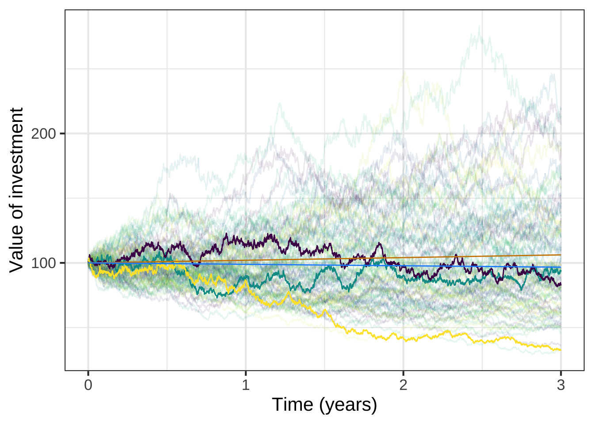
The eye is drawn to the trajectories leading to large returns. That’s misleading. Although there are a few trajectories that show a 3-year return above 50% (that is, to $150 or higher) in fact the majority of trajectories fall below that of a purely deterministic \(r=2\%\) annual return exponential process. The volatility causes a decrease in the median return.
It’s easy to understand why the stochastic shocks cause a loss in return. Consider a stock with an initial price of $100 that in two successive days goes up by 50% and down by 50%. These ups and downs should cancel out, right? That’s not what happens:
\(\$100 \times 1.5 \times 0.5 = \$75\)